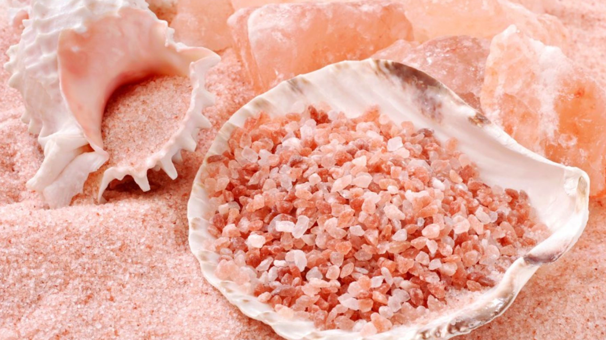

La Sal Rosada de Maras, también conocida como sal de Maras o sal andina, es un tipo de sal que se extrae de las salinas ubicadas en Maras, una localidad en el Valle Sagrado de los Incas, en Perú. Esta sal se ha producido en la región durante siglos y es conocida por su color rosa característico, que se debe a la presencia de minerales y oligoelementos en el agua de manantial que fluye a través de las terrazas de evaporación.
El proceso de producción de la Sal Rosada de Maras es tradicional y artesanal. El agua salada fluye a través de una red de canales y terrazas de evaporación construidas en la ladera de una montaña. A medida que el agua se evapora, la sal se cristaliza en las terrazas y se recolecta manualmente por los trabajadores locales. Estos cristales de sal tienen un color rosado debido a la alta concentración de minerales, como el hierro, que se encuentran en el agua y en el suelo de la región.
La Sal Rosada de Maras es apreciada por su sabor único y su hermoso color, que la hace popular en la cocina gourmet y en la gastronomía peruana. Se utiliza para sazonar una variedad de platos, desde carnes hasta ensaladas, y se considera un producto de alta calidad debido a su origen natural y proceso de producción tradicional. También se ha convertido en un producto turístico, ya que las salinas de Maras son una atracción turística en sí mismas debido a su belleza escénica y su historia cultural.
En resumen, la Sal Rosada de Maras es una variedad de sal que se produce en las salinas de Maras, Perú, y es conocida por su color rosado y su uso en la gastronomía peruana y la cocina gourmet.
Beneficios y usos: